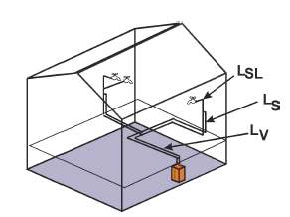

2.3. 급탕 에너지소요량¶
급탕 에너지소요량 Q_w,f는 급탕 열 생산기기의 열 공급량(Q_w,outg), 생산과정에서 발생하는 (월별) 열손실(Q_w,g) 및 재생열에너지(태양열 및 주변 열)에 의해 다음과 같이 계산됩니다:
where,
Q_w,outg: 급탕 열 생산기기의 열 공급량
Q_w,g: 생산과정에서 발생하는 (월별) 열손실
Q_w,reg: 재생열에너지(태양열 및 주변 열)
2.3.1. 급탕 열 생산기기의 열 공급량¶
where
Q_w,b: 급탕에너지요구량
Q_w,ce: 전달 열손실
Q_w,d: 분배 열손실
Q_w,s: 저장 열손실
2.3.1.1. 전달 열손실¶
전달 열손실 Q_w,ce는 이미 존의 급탕 에너지요구량 Q_w,b에 포함되어 있으므로 0으로 계산합니다. 이에 따라 전달 열손실에 필요한 보조에너지 Q_w,ce,aux 또한 0이 됩니다.
2.3.1.2 분배 열손실¶
급탕배관망을 따라 분배되는 중앙 공급식 급탕의 경우, 전체 배관망의 열손실은 다음과 같이 계산됩니다:
where
Q_w,d,i: 급탕배관망 구간 i의 열손실
한편 구간 i의 열손실 Q_w,d,i:
where
U_i: 구간 i 배관 열관류율
L_i: 구간 i 배관 길이
v_w,m: 급탕배관망 온도 (보고서에서는 복수의 의미로 사용)
v_i: 주변온도 (보고서에서는 복수의 의미로 사용)
d_Nutz,mth: 월간 이용일수
t_Nutz,T: 일일 이용시간
배관망은 다음 그림과 같이 크게 V, S, SL의 3가지로 분류합니다.

그림 3.2.9-2. 배관망 분류
{kind=link}
- V: 생산기기에서 주관까지의 수평분배범위
- S: 지관
- SL: 취수구까지의 차단 가능한 말단 배관
배관의 열관류율
| 건물 준공연도 | 분배 | 외부에 설치된 수직배관 | 내부에 설치된 수직배관 | ||
|---|---|---|---|---|---|
| V | S | SL | S | SL | |
| 1995 이후 | 0.200 | 0.255 | 0.255 | 0.255 | 0.255 |
| 1980 ~ 1995 | 0.200 | 0.400 | 0.400 | 0.300 | 0.400 |
| 1980 이전 | 0.400 | 0.400 | 0.400 | 0.400 | 0.400 |
구간 i 배관 길이 L_i는 세부 도면을 바탕으로 산정합니다.
주변온도
| 표준치 | 표기 | 단위 | V | S | SL |
|---|---|---|---|---|---|
| 주변온도 | vi | ℃ | 제3장2절4항 참조 | ||
| 난방주기가 아닐 경우 평균 주변온도 |
vi | ℃ | 22℃ | ||
| 평균 주변온도 | vi | ℃ | 비 난방 존 13℃ 난방 존 20℃ |
||
한편 순환배관이 있지만 순환이 정지되었다면 위 식에서의
일일 이용시간 t_Nutz,T:
급탕배관망 온도 v_w,m:
만일 순환배관과 연결배관이 없다면 위 식에서의
일일 이용시간 t_Nutz,T:
급탕배관망 온도 v_w,m:
2.3.1.3 저장 열손실¶
저장 열손실 Q_w,s는 축열조의 가열 방식, 즉:
(1) 간접 가열식
(2) 간접 가열식, 태양열 복합
(3) 전기 가열식
(4) 가스 가열식
에 따라 다음의 4가지 방식으로 계산됩니다:
(1) 간접 가열식
(2) 간접 가열식, 태양열 복합
(3) 전기 가열식
(4) 가스 가열식